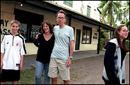

August 17, 2005
Creating a Free Cinema Off Beaten Track in Fiji
By STEPHEN HOLDEN
To observe a young audience collapsing with laughter while watching a Three Stooges romp on a remote Fijian island in "Reel Paradise" is to be reminded of the movies' primal appeal. Rough-and-tumble farce with an edge of cruelty is a visual language that requires no translation, no education.

Amy C. Elliott
Wyatt, Janet, John and Georgia Pierson outside the family moviehouse.
|
Later in the documentary, when "Jackass: The Movie" is shown at the same theater, pandemonium erupts once again. What is the difference between a contemporary piece of gross-out trash and a classic farce if there's no cultural context in which to distinguish them? These responses to movies are among the revelations of "Reel Paradise," directed by Steve James, the documentary filmmaker best known for "Hoop Dreams." The movie follows John Pierson, the wiry, knobby gadabout and sometime guru of the American independent film movement, and his family to the rural Fijian island of Taveuni, well off the track beaten by South Seas tourists. Mr. Pierson, who helped put Spike Lee on the cinematic map by investing in "She's Gotta Have It," is the author of the independent film history "Spike, Mike, Slackers and Dykes" (Hyperion Books, 1996) and a co-creator with his wife, Janet, of "Split Screen," a series that ran for several years on the Independent Film Channel. Restless and high strung, he expresses a certain boredom with the movement he helped make popular. In the year he and his family lived on the island, Mr. Pierson showed free movies to packed houses at the 180 Meridian Cinema, a 288-seat movie theater built in 1954, which he hyperbolically calls the world's most remote movie theater. The free program was financed in part by several independent film makers whose work he championed. Accompanying him on his sabbatical from the New York suburbs were Janet, their 16-year-old daughter, Georgia, and their 13-year-old son, Wyatt. In Taveuni, the two children enrolled in the local Roman Catholic high school, where they were the only white students. Most of the Fijians who live on Tavenui are either native islanders or Indo-Fijians descended from indentured servants who immigrated to the islands in the late 19th century. They earn a subsistence living as farmers, fisherman and merchants. "Reel Paradise" is a family diary, an exploration of interacting cultures and a meditation on the impact of movies on a population unfamiliar with modern mass media. Mr. Pierson's free movie program comes under fire from the local Catholic mission both for its content ("Jackass: The Movie" was later banned from Fiji) and for the fact that it's free. The priests believe it is bad social training to give the Fijians something for nothing. But if the movies weren't offered for nothing, hardly anyone on the island could afford to go. While Mr. Pierson credits the church with ending island customs like cannibalism, he bitterly opposes the priests' encouragement of individual free enterprise at the expense of longstanding communal values. Mr. James and his camera crew arrived on Taveuni near the end of the family's stay on the island to find the Piersons unnerved by a recent burglary (the second during their stay) in their rented house; more than $10,000 worth of property, including Janet's computer, has been taken. At the same time, their tough Australian landlord is pressing them to pay their bills. Georgia fights with her parents over typical teenage issues like staying out late, and after one quarrel she disappears into the night. Her Fijian best friend, Miriama, would rather stay with the Piersons than in her own home, where her father beats her mother, and the film gives the sense that such domestic violence is common in Fiji. Late in the film, Mr. Pierson contracts dengue fever and allows Wyatt to take his place running the theater, which Wyatt does with remarkable poise and equanimity. "Reel Paradise" is a deliberately untidy, open-ended, thoroughly absorbing chronicle that lets the lives of its characters spill across the screen without editorializing. The family's stay in Taveuni ends with a 10-day movie marathon that concludes with Buster Keaton's 1928 classic "Steamboat Bill, Jr." Are movies any kind of social panacea? Although Mr. Pierson knows better, reflecting on the audience's delighted laughter, he remarks about the Keaton film, "You almost feel like it's a cure for all that ails you." Would that it were so. "Reel Paradise" is rated R (under 17 requires accompanying parent or adult guardian) for strong language. Reel Paradise Opens today in Manhattan. Directed and edited by Steve James; director of photography, P. H. O'Brien; music by Norman Arnold; produced by Mr. James and Scott Mosier; released by Wellspring. At the IFC Center, 323 Avenue of the Americas, at Third Street, Greenwich Village. Running time: 110 minutes. This film is rated R. WITH: John Pierson, Janet Pierson, Georgia Pierson and Wyatt Pierson.
More Press...
|